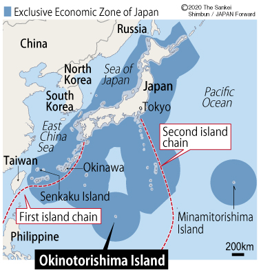
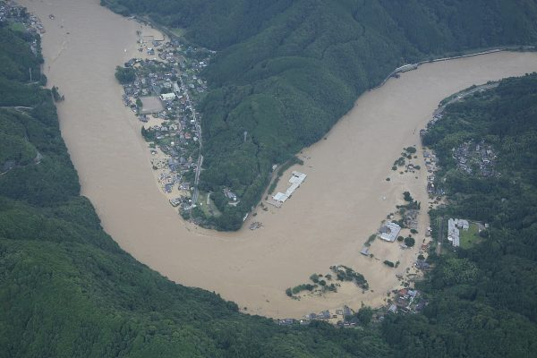
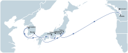
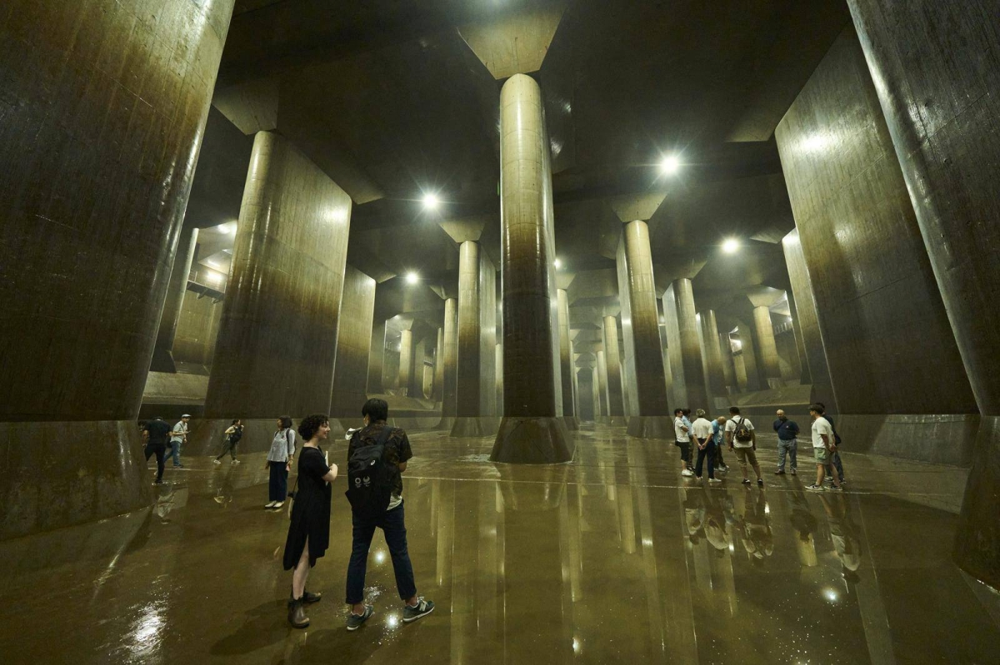

Oceans & currents
Surrounding Ocean Currents
Japan is surrounded by different oceans. To the east is the Pacific Ocean, and to the west is the Sea of Japan. I learned that three main ocean currents affect Japan's weather and fishing.
The first is the Kuroshio Current. It is a warm current that flows from the south along Japan's east coast. It makes the winters warmer and more humid. The second is the Oyashio Current. It is a cold current that flows from the north. It carries cold water with lots of nutrients. Where the Kuroshio and Oyashio currents meet, it creates one of the best fishing areas in the world.
The third is the Tsushima Current. It is a warm branch that goes into the Sea of Japan on the west side. When I researched this topic, I learned it warms the water and brings moisture, which causes heavy snow along the coast in winter.
Ocean Currents
Hover over the current paths (red, blue, or gold arrows) on the map to inspect their geomorphic features and climatic impacts on the Japanese archipelago.
Island Geography & Marine Resources
Japan is an archipelago, which means a group of islands. It has five main islands and more than 14,000 smaller islands. Because of all these islands, Japan has a very large Exclusive Economic Zone (EEZ), which is the 6th largest in the world. Even though Japan is small on land, it has a huge ocean area. This gives Japan a lot of fish and potential mineral resources on the ocean floor.
I also learned that the ocean is very important for Japanese culture. The sea currents shaped a diet rich in fish and seaweed. Many traditional stories (like Ryujin the dragon god) and beautiful sea shrines (like Itsukushima) are also closely related to the ocean.

Flooding in Japan
Flooding is a major issue in Japan. It happens almost every year during the rainy season in June and July, and when typhoons strike between August and October. Because Japan has steep mountains, heavy rain can quickly fill the rivers and overflow into nearby towns and cities.
To prepare for floods, the government has built tall concrete walls (levees) along the riverbanks, flood bypass channels, and large retarding basins to hold extra water. They also created advanced satellite weather radar systems like XRAIN and publish hazard maps so we know where to evacuate during a storm.

Trade routes & partners
Geological Impact on Inland Trade
Japan has many steep mountains, so its rivers are short and fast. This means rivers are not very useful for carrying cargo across the country, unlike flat countries. Historically, people had to travel by land. I learned about two historic roads: the Tokaido was a flat road along the coast, which was fast but often flooded by rivers and storm surges. The Nakasendo went through the rugged central mountains. It was steep and slow, but it was safe from ocean storms.
Today, Japan uses expressways and bullet trains (Shinkansen). Because of the mountains, they had to build many tunnels, like the Kan'etsu Tunnel and the undersea Seikan Tunnel between Honshu and Hokkaido. They also use seismic engineering to protect these routes from earthquakes.
Top Import Partners (% Share)
Top Export Partners (% Share)
Maritime Trade & Shipping Routes
Japan does not have many natural resources like oil or coal, so it must import them by sea. Over 99% of Japan's trade goes by shipping routes. The most critical route goes through the Strait of Malacca and the South China Sea. This route brings crude oil from the Middle East. If this route is blocked, it would be a big problem for Japan's energy.
Historically, the **Kitamaebune** cargo ships were very important. They connected Osaka and Hokkaido through the Sea of Japan, carrying kelp, rice, and fish fertilizer, which helped port towns grow.
Today, Japan's major ports such as Tokyo, Yokohama, Nagoya, Kobe, and Osaka continue to connect the country to global shipping networks.

Coastline geomorphology
Coastline Shapes & Composition
Japan has a very long and irregular coastline. One of the most famous coastal landforms is the ria coastline, which creates many narrow bays and natural harbors. Japan also has rocky coastlines such as the Tojinbo Cliffs and sandy coastlines like the Tottori Sand Dunes.
Positive and Negative Impacts
Japan's coastline provides many benefits. The deep bays of ria coasts create excellent natural harbors that support fishing, shipping, and trade.
However, the same coastline can also increase natural hazards. During the 2011 tsunami, some ria coast areas in northeastern Japan experienced very large waves because the narrow bays concentrated the incoming water. This shows how the coastline can be both helpful and dangerous.
Typhoons & tsunamis
Typhoons & Storm Surges
Japan experiences several typhoons every year, especially from late summer to early fall. These storms often bring strong winds, heavy rainfall, flooding, and coastal storm surges.
One recent example is Typhoon Hagibis (2019), which caused severe flooding across eastern Japan and damaged thousands of homes. Because typhoons occur regularly, flood prevention has become an important part of Japan's infrastructure planning.
To reduce flood risks, the Japanese government has built levees, floodgates, and large drainage systems such as the Metropolitan Area Outer Underground Discharge Channel (G-Cans) near Tokyo. These projects help protect cities from heavy rainfall and overflowing rivers.

Tsunamis & Coastal Vulnerability
Tsunamis are one of the most serious natural hazards in Japan because the country is located along active tectonic plate boundaries. Unlike storm surges, tsunamis are caused by large undersea earthquakes.
The most significant example is the 2011 Great East Japan Earthquake and Tsunami. A magnitude 9.0 earthquake occurred off the coast of northeastern Japan and generated a massive tsunami. In some locations, waves reached nearly 40 meters high and traveled several kilometers inland. Nearly 20,000 people lost their lives, and entire coastal communities were destroyed.
This event is especially meaningful to me because I grew up in Natori, Miyagi Prefecture, one of the areas affected by the disaster. Although my neighborhood was located on higher ground, I witnessed how much the tsunami changed nearby communities and coastlines.
After 2011, Japan expanded its tsunami warning systems, evacuation routes, seawalls, and disaster education programs. Today, tsunami preparedness is an important part of life in many coastal regions.